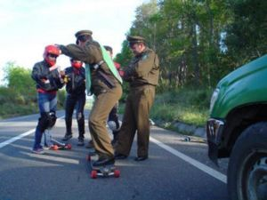

Policía
 De: La Frikipedia, la enciclopedia extremadamente seria.
De: La Frikipedia, la enciclopedia extremadamente seria.
La Policía, comúnmente conocida como maderos, pitufos, chapas, pacos, tombos, monos, hijos de puta, etc... (en México son conocidos como "placa" "chota" "puercos" "tira" "jura" "los azules" "el torzón" "cuicos", entre otras denominaciones) es un cuerpo del Estado que tienen el papel de joder defender a los habitantes de una ciudad o habitáculo, poner multas, dirigir el tráfico y otros, pero su verdadera vocación es la de dar paseos, comer donas y tomar cafés (he aquí la explicación a su cuerpo danone). Los policías españoles están dotados de una gran capacidad intelectual de ahí que haya tanta seguridad, capacidad que no envidia nada a la del conocido "Agente 007". El policía Español es antecesor del agente Wiggun de Los Simpsons: rosquillas y cafés son su fuente de poder y eterna juventud lo que les mantiene con poderes sobrenaturales durante la jornada laboral. Aun que sin duda se les puede destacar por su bravura y valentía (semejantes a los intocables de Elliot Ness), siempre en la calle por las noches (eso si, sin bajarse del coche), en el cuerpo a cuerpo es sorprendente lo bien que se defienden con la porra.
Historia
Originalmente, la policía fue creada por ZP para intentar protegerse de los ataques de Manolo, pero en cuánto éste acabo con unos pocos a base de golpes de bombo, se rindieron y sometieron al servicio el enemigo (suelen aceptar tratos fácilmente). Manolo los organizó a su merced y los distribuyo por la Tierra en distintas agrupaciones, dependiendo del superpoder del que hacían gala.
En la actualidad se rumorea que se dedican a proteger a la sociedad y a mantener el orden público, pero más bien es al revés: mantienen el orden público y protegen a la sociedad.
Científicos creen que los policías podrían llegar a pensar, pero es solo una teoría.
"Arriba las manos y abran las piernas...", Razon por la que quise ser policía
Tipos
- El Robocop: su apariencia física suele tratarse de un hombre alto, feo, corpulento y hábil. Son los mejores hombres del comisario. Aunque su chulería suele jugarles una mala pasada. Son musculosos y corpulentos y presentan un número realmente reducido y en peligro de extinción.
- El Chuck Norris: Es el espejo donde todo policía querría mirarse, no llega a ser tan fuerte como Robocop pero su intuición para los criminales es devastadora. El Chuck Norris, posee un gran olfato para detectar droga de ahí que en Espiña no haya marihuana, hachís, cocaína...
- El bombas, desmantelar maFIAs... Pero que finalmente se dan cuenta que lo más que han conseguido es bajar una pelota de un árbol o haber salvado un gato. Son chulos y prepotentes y hay que tenerles severo respeto ya que han conseguido sacar una oposición en la que un 10 se consigue haciendo 2 planchas y saltando 5 cm del suelo.
- El Bond: Debido a su deficiente capacidad intelectual han decidido ingresar en el cuerpo de policía con el fin de demostrar a su familia la que suele estar protagonizada por una abuela una mujer y un niño y una niña que son muy valientes. Cuando llega a casa, al anochecer su porra es usada no solo como instrumento de defensa sino como juguete sexual, motivo por el cual su mujer es plenamente satisfecha.
- El Wiggun: Es el típico policía Espiñol
inútil, tienen gran barriga y barba de dos semanas. Se suelen encontrar en las puertas de la comisaría pero de vez en cuando (dos veces al año) salen en coche patrulla y hacen valorables hazañas tales como zamparse diez donuts en un minuto.
- El paco: Habita en Shile, es de color verde se mueve en unas cosas cacharras llamadas cucas se esconden en unas cuevas pintadas de color blanco y verde, cuando hacen el alholtest lo hacen un control siempre te saludan buenos dias buenas tardes, a veces salen a patrullar a las calles de las ciudades de Chile en busca de flaytes que aunque estén matando o robando sólo los detienen para pedirle su identificación y largarlos ya que la justicia chilena es una mierda.
También salen a las protestas a disipar a los manifestantes que se atreven a llegar a la House of Money en unos carros llamados guanacos donde les tiran la mas pura agua del río mapocho, también se dedican a cuidar la frontera en busca de flaytes, peruanos, bolivianos, y argentinos narcotraficantes, buscados por la justicia evitando que entren a este pero siempre pasan igual ya que si tienes un amigo, familia o los coimeas te dan facilidades (véase caso Fujimori)... nota en la house of money donde habita la Michelle Chanchelete esta lleno de ellos no sé de donde salen peor hay más que en cualquier comisaría o como quieran llamarle.
 Un ejemplo de Paco cumpliendo con su deber.
Trabajo
El trabajo de un policía es tocarse los huevos, comer donuts y llevarnos a la comisaria (pasteleria) a mi y a mis amigos cuando un vecino se queja sumamente agotador, por la mañana tendrán que hacer clases de aerobic en una rotonda o cruce de importante tránsito de tráfico a la par que conducen el tráfico, ya por la tarde después del donuts darán algún que otro paseo por el centro de la ciudad para hacer la digestión, por la noche el trabajo se intensifica, consiste en coger el coche y dar vueltas por la ciudad.
Función en la sociedad
La policía cumple las siguientes funciones dentro del marco social:
- Recaudación de impuestos indirectos por mal aparcamiento: Aunque hayas aparcado bien siempre encuentran una excusa, ya sea aparcamiento en zona azul, en doble/triple fila, o que estás ocupando tres plazas de minusválidos.
- Protección de la salud pública: protegen a la sociedad del colesterol, requisando y acabando con todos los donuts, bollos y demás postres de desayuno, además de todo el café para evitar el insomnio crónico.
- Llegar tarde en un caso de robo u homicidio, y preguntar tontamente: Ehtá muergto?
- Protección al Gobierno y demás amigotes suyos a vida o muerte (o a mejor oferta).
- Organización de festejos de comedores de rosquillas.
- Atención 24 horas al ciudadano con problemas, ya que él no sabe tomarse la ley por su mano.
- Requisar cualquier tipo de droga
para el consumo propio por la seguridad del ciudadano.
- Por la noche suelen parar a conductores reteniéndolos con cualquier excusa, como por ejemplo saber su nivel de sangre en alcohol, independientemente de su estado, hasta que llega el siguiente. Pero en realidad lo hacen por que se sienten solos en mitad de la carretera:
- Perdone, sabe a que velocidad estaba conduciendo?
- Iyoo, es que jemabia atrancao el acelerador
- Por favor, bájese del coche y entrégueme su documentación
- Que pasa contigo hermano, es que no te fíaa de mi o qué.
VERÍDICO
- Perdone, ¿Se puede saber qué se propone?
(frase de un policía a un chico que estaba metiendo la moto en su garaje)
Organización de la policía
Dependiendo de sus superpoderes y habilidades, la policía se divide en:
- Grupo de Estómagos Agradecidos: Es el grupo dedicado a la protección de la salud pública y atención del ciudadano, suelen encontrarse en oficinas y establecimientos carcelarios. Son capaces de comer toneladas de bollos y cafés sin peligro de morir.
- Grupo de Anti disturbios: Se dedican a mantener el orden público y a fastidiar los botellones. Es el grupo más temido y peligroso, pues tienen la habilidad de pegar con sus porras durante horas sin descansar.
- Grupo de Visión Nocturna: Son capaces de ver un coche a kilómetros, incluso de noche, aunque temen a la oscuridad. Suelen dedicarse a la recaudación de impuestos a personas con problemas alcohólicos. Son fácilmente detectables por vestir colores fosforitos de los años 80 (suelen decir que los usan para ser reconocidos por la noche, pero en realidad les gusta vestir así) y por estar armados con unas banderillas también de algún color fosforito con las que pueden señalizar hasta el aterrizaje de emergencia de un avión.
- Grupo Local: Son los que tienen la labor más incomprendida. La gente suele pensar que su obligación es la de proteger a los ciudadanos, pero nada más lejos, su labor es la de ir poniendo multas a todo vehículo que se les antoje. Son los más inteligentes y rápidos que los demás, por lo que siempre tienen una excusa sorprendente para poner una multa o se volatilizan sin dejar rastro tras haber puesto una.
- Grupo de Tráfico: Al igual que el grupo de visión nocturna, el grupo de tráfico se dedica a la recaudación de impuestos a vehículos, pero por otras causas: exceso de velocidad o hablar por el móvil o el telégrafo. Tienen la habilidad camaleónica de adaptarse al medio, quedando invisible para el ojo humano.
- Grupo de Investigación: Se dedican a la investigación y resolución de crímenes, que para cualquier ser humano normal, no tendrían resolución, como la desaparición de Wally en el Vicente Calderón.
- Grupo de recaudacion de dinero: Consiste en una grua seguida de un coche de policia dando un alegre paseo por la ciudad(no hay nada mas que explicar).
Policías famosos
Por donde andan
- En el botellón: Aparecerá el típico grupo de Rambos en coche que simplemente darán la misma vuelta de siempre y se irán.
- En el quinto coño: Se suelen situar en lugares conflictivos de alto riesgo para ello se alejarán de la mano de Dios e irán a pedir la documentación a los dos primeros jóvenes que encuentren.
- En el centro: Suelen estar en constante guardia, siempre atentos, nada se les escapa, son capaces de diferenciar todos los olores de los donuts.
- En las carreteras Se suelen poner en los míticos tramos que hay señales de limitación de velocidad cada 50 metros (límite 50, 70, 40, 50, etc...) y soliéndose poner en una limitación menor a la anterior (de 70 a 50, por ejemplo) y cazar a la mayor cantidad de coches que puedan con su flamante radar. Su único propósito en esta materia es RECAUDAR MAS IMPUESTOS EN FORMA DE MULTAS.
- Donde quiera que no los necesites Te los encontrarás en bares, carreteras, tiendas, parques.. siempre que no los necesites. Pero poseen grandes poderes psíquicos que les hacen desaparecer si te encuentras en problemas como estar en un atraco o robo. Eso sí, después de salir de esa situación aparecerán de la nada para decirte que tu retrovisor está mal puesto y te pondrán una multa.
- En Ecuador se la pasan todo el día con sus mozas (mujeres) Bailan en medio de la calle el baile del Serrucho.
Sabías que
- ..un policía sabe lo que estás haciendo ahora mismo?
- ..si un policía te dice que no te preocupes, te tienes que preocupar , y mucho?
- ..los policías también se emborrachan?
- ..la gente cree que son robots?
- ..si quieres ser poli eres más propenso a sufrir de un infarto por obesidad?
- ...existe la policía gay?
Véase también
Autor(es):
- Krusher
- Nexo
- Fordus
- N3ptun3r
- Doctor grijander
- MURO DE AGUAS
- Frikiman
- Aque
- Thalas
- Alex2610
Frikipedia 2005-2016, Licencia
GFDL 1.2 - Extraído por FrikiLeaks